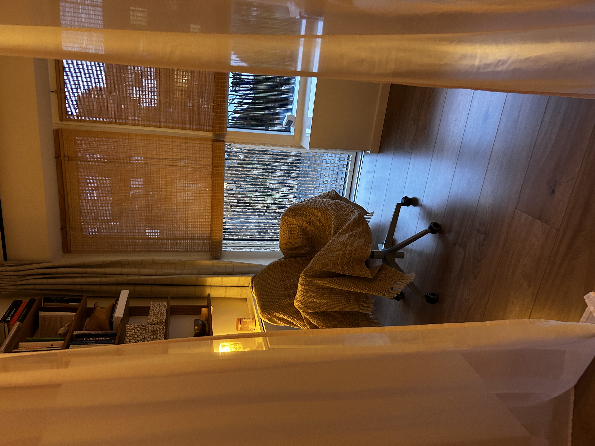

Psykoterapi i Tilst
Et trygt sted til at dele alt det livet rummer.


Et trygt sted til at dele alt det livet rummer.
Som psykoterapeut arbejder jeg balanceret med det hele menneske, og jeg har erfaring med børn, unge, voksne og par. Jeg arbejder dybdegående ud fra forskellige psykoterapeutiske tilgange, hvor jeg i behandlingen også anvender terapeutiske metoder og redskaber som terapeutisk sandplay, spædbarnsterapi og familiesystemisk arbejde samt NLP, for at hjælpe mennesker med livets udfordringer og skabe vedvarende forandring.
Nogle gange kalder livet på et dybere arbejde — et sted hvor gamle mønstre, relationer eller oplevelser har sat spor. Her arbejder vi i dybden med forståelse, regulering og forankring, så du kan skabe varige forandringer og stå stærkere i dig selv.
“Jeg startede i terapi hos Heidi for et år siden, hvilket har hjulpet mig på måder der er svære at sætte ord på. Hendes nærvær og omsorg kombineret med de terapeutiske metoder har gjort, at jeg er kommet igennem en svær sorg proces, og hjulpet med de udfordringer, der har været i mit liv. Hun har formået at skabe et rum, hvor jeg er tryg i at dele alt og føler mig set, hørt og forstået. Jeg har lært at arbejde med mig selv på nye måder og har fundet mere ro i min hverdag. Jeg er taknemlig for Heidi, både som person og terapeut, specielt hendes evne til at gribe et andet menneske på. Jeg kan varmt anbefale hende til dem, som har brug for støtte til at dele og bearbejde de svære ting i livet.”
Udtalelse fra kvinde på 34 år i terapiforløb
“Vores datter var igennem 2 år blevet holdt udenfor i sin klasse, dette var begyndt at sætte sit præg på hendes psyke på sådan måde, at hun ikke alene blev indadvendt, men faktisk helt indelukket. Så da hun startede på efterskole, var det svært for hende at tage imod og stole på mennesker. Hun vidste, som hun selv sagde det, ikke hvordan man var sammen med nogen, der godt gad at tale med hende. Vi besluttede derfor at hun skulle prøve at have et par timer sammen med Heidi som jeg kendte fra mit arbejde. Allerede efter et par gange var virkningen synlig. Vores datter siger, at det var dejligt at have en at tale med. Hun følte sig set og hørt og synes det var dejligt ikke at blive behandlet som et barn, men samtidig blev der talt et sprog, hun forstod. Hun følte sig øjeblikkeligt tryg, og hun havde lyst til at fortælle om sig selv og hendes hverdag. I dag går vores datter på 2. år på efterskolen og ikke alene trives hun, men hun er også begyndt at bygge et ungdomsliv op omkring sig selv, da hun efter at have været hos Heidi var klar til at tage imod og hendes tillid til andre mennesker var begyndt at blive genoprettet og herefter har hun gjort sig mange positive erfaringer på netop dette.”
Udtalelse fra Forældre til pige på 15 år i terapiforløb
“I’ve had an amazing experience working with Heidi. She creates a warm and relaxed atmosphere and a safe space to open up, while still keeping everything very professional. She’s extremely friendly, understanding, and easy to talk to. After every session, I left feeling lighter and more self-aware, often with new tools and perspectives that truly helped me grow and make positive changes in my life. I’m really grateful to have found her and would highly recommend her to anyone looking for genuine, and effective support.”
Udtalelse fra Kvinde på 25 år i terapiforløb